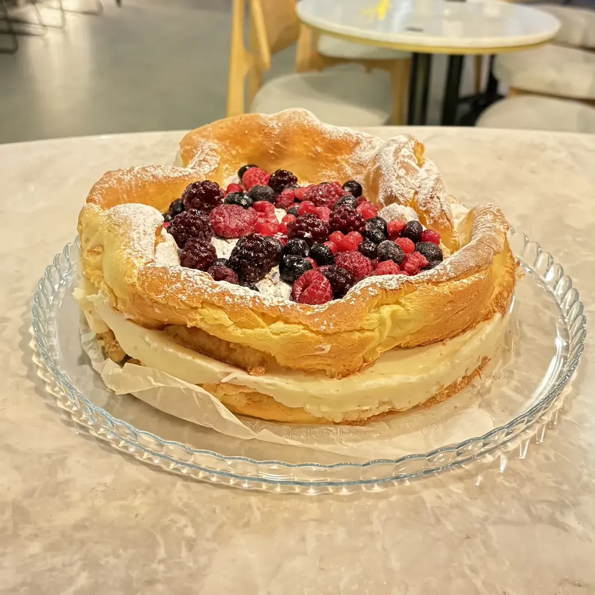
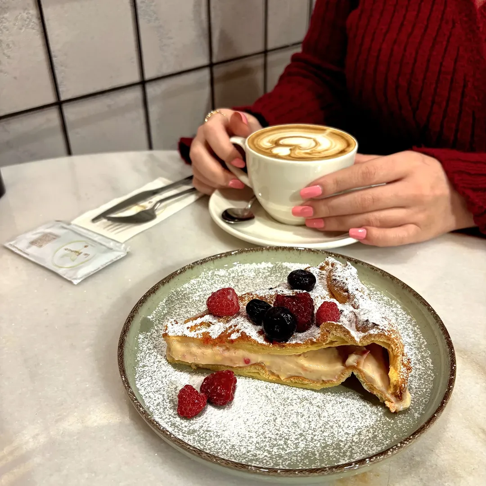

CENNET MAHALLESİ · İSTANBUL
Bir fincan kahve, bir dilim tatlı.La Bianco’da küçük bir mola verin.

KAHVE & YANINDA
Sıcak bir fincan, serin bir içecek ya da kahvenizin yanına bir tatlı. Seçim sizin.
Espresso, americano ve latte çeşitleri.
Beyaz çikolatalı brownie ve ballı cevizli Marlenka.
Kahvenin yanına tereyağlı kruvasan.
Platform fiyatları mağazadan farklı olabilir. Güncel çeşitler ve alerjen bilgisi için bize danışın.

BİRAZ DA KENDİNİZE ZAMAN
La Bianco’nun karpatkasını keşfedin. Günün tatlıları ve kahveleri için paylaşımlarımıza göz atın.
CENNET’TE KAHVEYE BEKLERİZ
11.00–00.00
Ziyaret öncesi güncel saatleri resmî hesabımızdan kontrol edebilirsiniz.
Bu sayfa Anıl Akyıl tarafından hazırlanmış bir tasarım örneğidir; işletmenin resmî web sitesi değildir.
Bu demoda üyelik ve rezervasyon formu bulunmaz. Ziyaretçilerden ad, telefon veya mesaj bu sayfa üzerinden toplanmaz. Fotoğraflar ve yorumlar kamuya açık işletme kayıtlarından alınmıştır.
Sayfa GitHub Pages üzerinde barındırılır. GitHub, güvenlik amacıyla ziyaretçilerin IP adreslerini kaydeder. GitHub’ın açıklaması
Instagram veya Google bağlantıları ilgili hizmeti açar; bu hizmetlerin kendi gizlilik koşulları uygulanır. Görseller bu demo ile aynı adresten yüklenir. Harici yazı tipi hizmeti kullanılmaz.
İşletmenin resmî yayını için veri sorumlusu ve kullanılacak özelliklere göre ayrıca aydınlatma metni hazırlanmalıdır.
Bu demonun kodunda analiz veya reklam çerezi, takip pikseli ve kalıcı yerel depolama kullanılmaz. Menü ve galeri tercihleri kaydedilmez.
Instagram ve Google içerikleri gömülü olarak yüklenmez. İlgili hizmetler yalnızca bağlantılarına tıklarsanız açılır ve kendi çerez uygulamalarına sahip olabilir.
Barındırma sağlayıcısının güvenlik kayıtları çerezlerden ayrıdır. İleride analiz ya da üçüncü taraf entegrasyonu eklenirse bilgilendirme ve tercih mekanizması yeniden düzenlenmelidir.